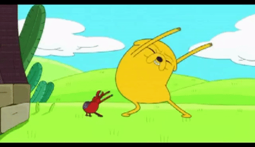

Demystifying Machine Learning
Branden Stone
Hamilton College
What is Machine Learning?
Simply put, machine learning is the science of programming computers so they can learn from data.
- (Aurthur Samuel, 1959) Machine learning is the field of study that gives computers the ability to learn without being explicitly programmed.
Example: The SPAM filter

Naive approach

- You notice 4U, free, amazing are used a lot
- Then write code to stop these emails
But if the spammers notice they are being blocked, they will start using 4 you instead.
- If this happens you need to write more rules
- Your code will become exponentially large and unmanageable.
- Thankfully there is a better way.
ML Approach

- All of this can be automated!
Blocking SPAM is not the only thing ML is good for. You can use it for
- Problems for which existing solutions require a lot rules
- Complex problems where there is not good traditional solutions
- Fluctuating environments
- Getting insights about large amounts of data
- Differentiating dog and cat pictures
There are three main tasks.
- Supervised
- Unsupervised
- Reinforcement
Supervised Learning

Types of supervised learning include:
- Regression
- Decision Trees
- Random Forests
- Support Vector Machine
- Neural Networks
Unsupervised Learning


Types of unsupervised learning include:
- k-clusters
- Principle Component Analysis
- Expectation Maximization
- t-distributed Stochastic Neighbor Embedding
- Apriori
- Eclat
Reinforcement

- AI
- AlphaGo
Example: K-Clusters
- k points of the data are chosen to be centroids.
- Distances between every point and the k centroids are calculated and stored.
- Each data point is then assigned to the nearest cluster
- New cluster centroid positions are updated: similar to finding the mean of the points
- If the centroid locations changed, the process repeats from step 2, until the calculated new center stays the same, which signals that the clusters’ members and centroids are now set.
K-Clusters in action
Uses K-Clusters
- Image Segmentation and patters recognition
- Grouping Comments from the news
- Grouping inventory by sales activity
- Clustering animals by movement
- Bot Detection
Objective function
Formally we are trying to minimize the following:
Here we are clustering data points into disjoint subsets containing data points.
- is a vector representing the th data point
- is the geometric centroid of the data points in .
Supervised Classification
Time for an activity!

Support Vector Machines
Use the grapher nb for motivation, maybe just give the optimization problem, define the terms, and say the kernel trick is choosing the correct mapping, just like minimizing distance in calc.
Deep Learning